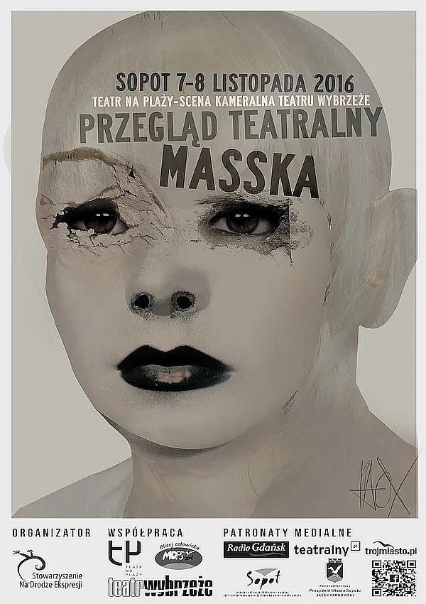
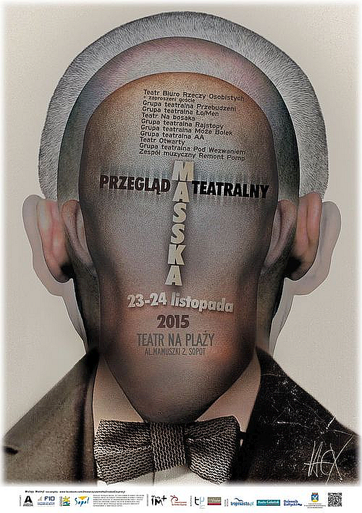
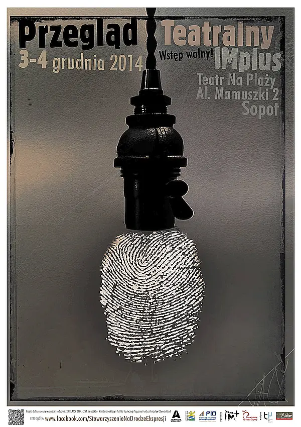
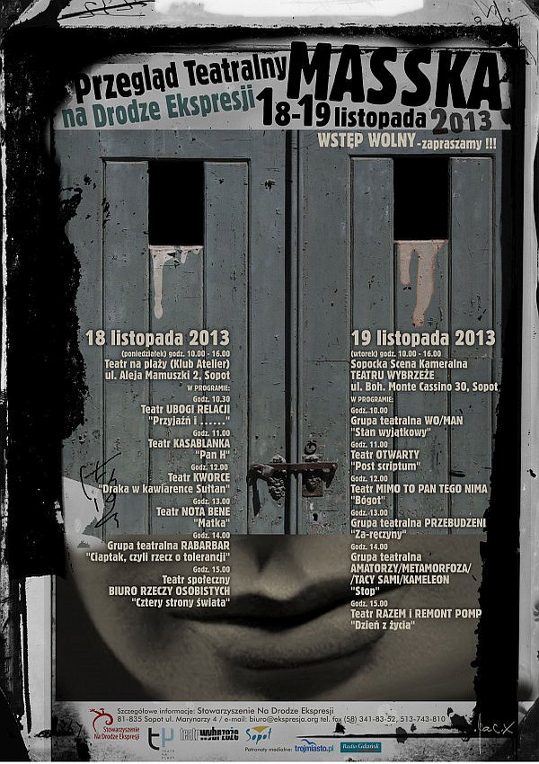
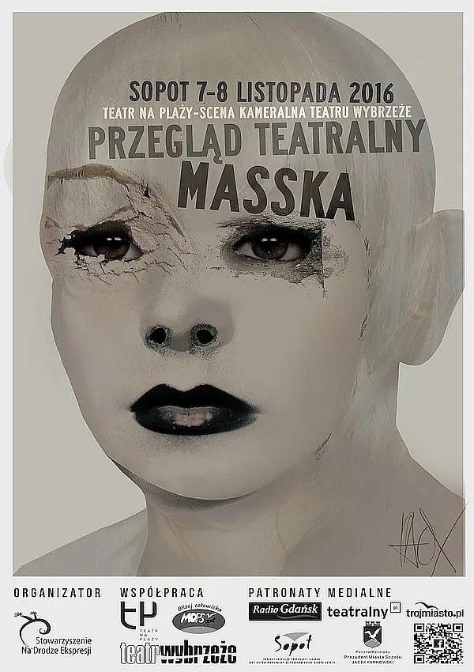
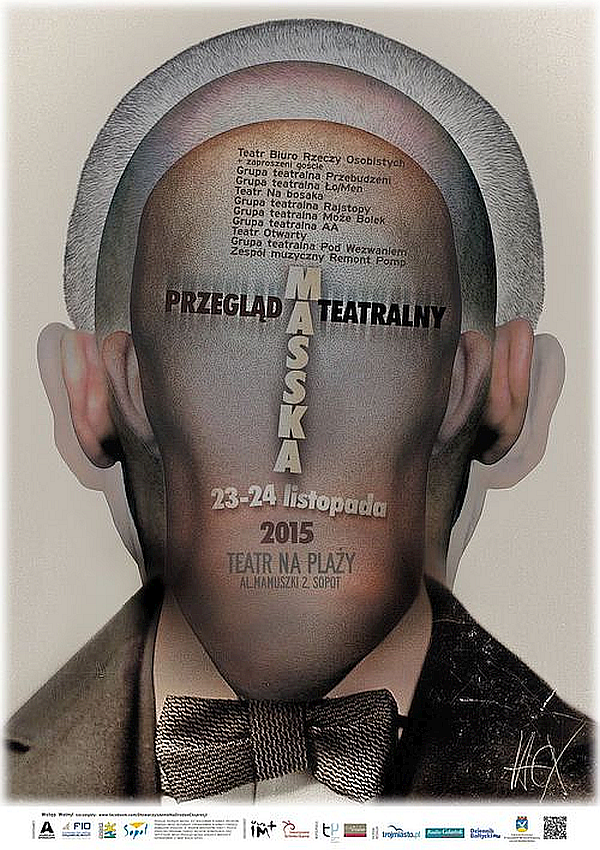
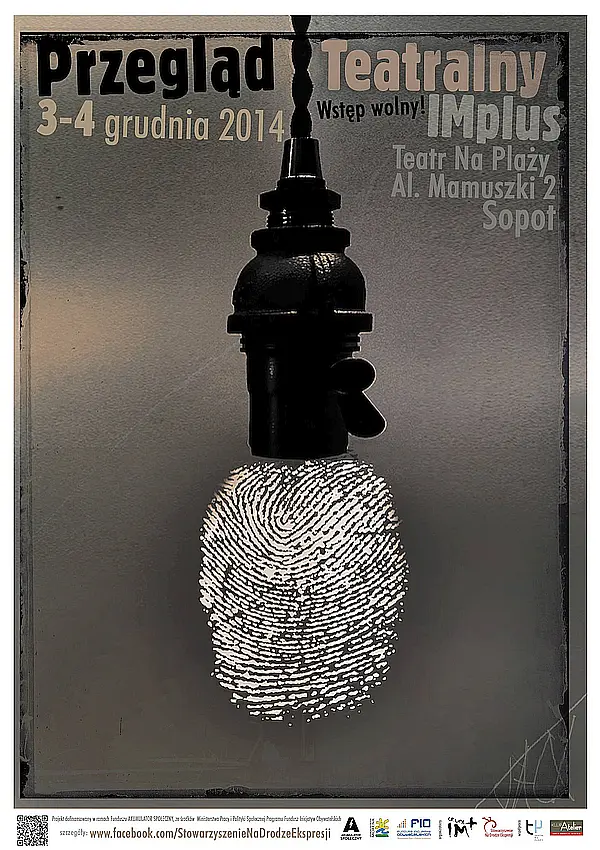
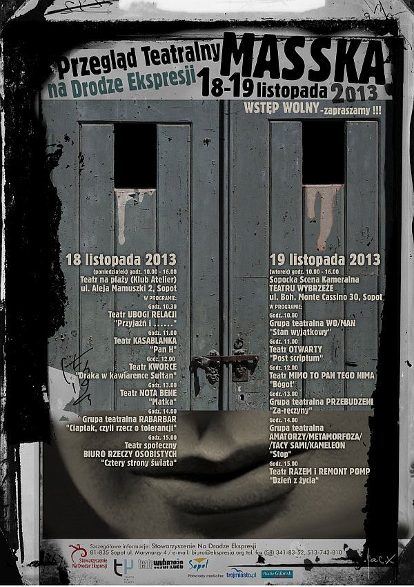

Witajcie na oficjalnej stronie internetowej naszego Międzynarodowego Festiwalu Teatralnego MASSKA - festiwalu, który daje możliwość spotkania artystów z niepełnosprawnościami, obejrzenia spektakli grup niezależnych, przedstawiających różne formy sztuk teatralnych z całej Polski i różnych zakątków świata.
MASSKA to otwarty projekt kulturalny, w którym biorą udział artyści z niepełnosprawnościami, teatry młodzieżowe, niezależne teatry, zawodowi aktorzy i lalkarze, co nadaje wydarzeniu charakter integracyjny. To komedie i dramaty, monodramy i sztuki grupowe, to etiudy i performance, to rozbudowane formy teatralne. Teatr słowa, tańca, pantomima, lalki - wszystko to mieści się w jednym słowie: MASSKA. Nasz Przegląd to konfrontacja naszych wyobrażeń o osobach z niepełnosprawnościami - artystach, którzy często funkcjonują poza głównym nurtem życia społecznego. To zaproszenie do wymiany myśli, doświadczeń, rozmów, wspólnego świętowania obecności w świecie teatru, a przede wszystkim celebracji życia, które niosą spektakle, i tego, które jest tu i teraz. Wszystkim nam przyświeca jedna idea: idea TEATRU DLA ŻYCIA.
To wszystko dzieje się od 22 lat co roku na scenach sopockich teatrów, od 3 lat na świeżym powietrzu i od 4 lat w sieci.
A propos sieci... Mijają właśnie 4 lata odkąd powiedzieliśmy sobie, że pora spróbować czegoś jeszcze i wprowadzić naszą MASSKĘ w inny wymiar. W pandemicznej, na tamten moment rzeczywistości, zbudowaliśmy wirtualną przestrzeń prezentacji spektakli w ramach naszego festiwalu. Życzliwe przyjęcie naszego pomysłu i całe rzesze odbiorców właściwie z całego świata utwierdziły nas w przekonaniu, że oto właśnie MASSKA będzie funkcjonować od tego momentu także w sieci. Dla wszystkich tych, którzy nie mogą być z nami, dla tych, którzy tworzą genialne rzeczy na drugim krańcu świata, dla tych, którzy chcą dzielić się swoją twórczością z wirtualnymi odbiorcami. Zapraszamy asasdasdasdzatem wszystkich, tych którzy w swoim życiu postawili tak jak my: na teatr... A tym, którzy jeszcze się tym nie zachwycili, zachęcamy do przejścia przez kurtynę. To piękny świat...
Paulina Lewandowska & Jacek Spica
 








Ta strona używa plików cookie w celu usprawnienia i ułatwienia dostępu do serwisu oraz prowadzenia danych statystycznych.